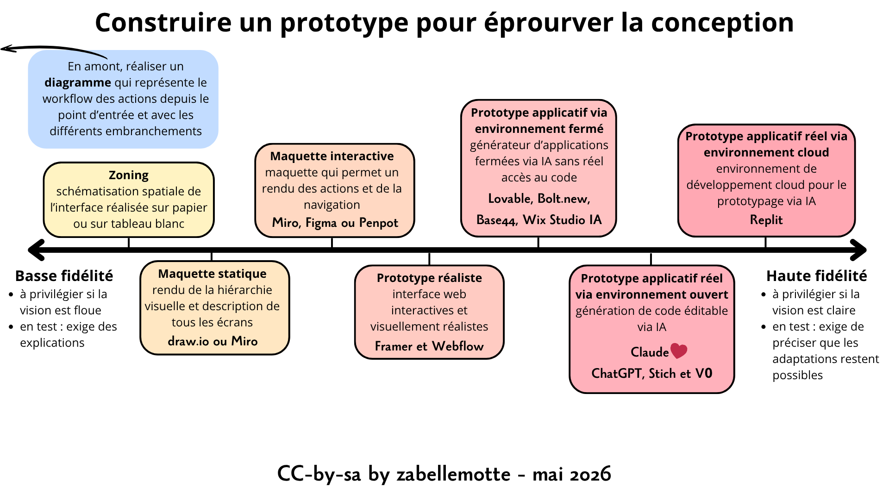

Construire un prototype pour éprouver la conception
En un coup d'oeil

- Etape UX
- 4. Génération
- Catégorie
- UX Design
- Intérêt
- Créer une vision partagée et tester le système tôt pour pouvoir l'affiner
- Complexité
- Moyenne
- Durée
- Quelques heures à quelques jours
- En vidéo
- Prototypes vs Wireframes in UX Projects (NNGroup)
- En résumé
- Balises pour le prototypage
- Réaliser un zoning
- Réaliser une maquette statique
- Réaliser une maquette interactive
- Réaliser un prototype réaliste
- Réaliser un prototype applicatif via un environnement fermé
- Réaliser un prototype applicatif réel via un environnement ouvert
- Réaliser un prototype applicatif réel via un environnement cloud
- La petite histoire
En résumé
Cette section présente les différents types de prototypes et décrit comment les exploiter dans un projet. Les prototypes basse fidélité sont à utiliser au début du projet pout produire une première vue sur le produit, la partager et la faire évoluer facilement. Lorsque la vision se stabilise, les prototypes haute fidélité sont alors envisagés pour cadrer les spécifications du produit fini. Les outils d'IA permettent aujourd'hui de construire beaucoup plus rapidement des prototypes haute fidélité et vont révolutionner les approches pour prototyper. Cet article dresse un bilan des outils populaires en mai 2026 et a été produit à l'aide de ChatGPT.
Balises pour le prototypage
Voici les éléments à prendre en compte pour choisir le bon format de prototype:
- moins la vision est claire, moins il faut investir de temps dans le prototypage;
- moins la fidélité est grande, plus il faut associer des explications orales ou textuelles au prototype pour clarifier le fonctionnement (les spécifications);
- plus la fidélité est grande, moins les utilisateurs osent critiquer; lors des tests utilisateurs de prototypes haute fidélité, il faut insister sur le fait que les évolutions sont encore possibles.
Le prototypage exige aussi de clarifier le workflow dans l'application en créant un diagramme qui part du point d'entrée et qui montre les différents embranchements possibles dans le parcours utilisateur (couvrir les cas d'erreur). Sur base de ce workflow, il est conseillé de dériver différents scenarii qui décrivent un parcours utilisateur au sein d'un contexte défini et sur base d'un objectif précis. Ces scénarii seront aussi une base intéressante pour tester l'application.
Réaliser un zoning
Le premier niveau de prototypage est le zoning, qui vise à réaliser une schématisation spatiale de l'interface. Les zonings sont réalisés sur un tableau blanc, avec des post-its ou du papier et présentent la structure générale et l'ordre des éléments.
Voici un exemple de zoning que j'ai réalisé au format papier pour un projet qui visait la présentation d'un rapport sur les erreurs des étudiants lors de la rédaction de textes en anglais. Les acronymes WFO, VOC, GRAM, SYNT, ... définissent les différents types d'erreurs : Word form, Vocabulary, Grammar, Syntax, ...

Réaliser une maquette statique
Le second niveau de prototypage est la maquette statique, qui peut avoir un niveau de fidélité plus ou moins élevé. La maquette rend plus fidèlement la hiérarchie visuelle et vise une description exhausive des différents écrans. Elle peut encore avoir un format papier mais le plus souvent, elle est réalisée avec une logiciel dédié comme draw.io ou Miro.
Voici un exemple de maquette réalisée avec draw.io pour le rapport sur les erreurs étudiantes en anglais (même écran que pour l'exemple lié au zoning):

Les maquettes statiques peuvent être rendues faiblement interactives en créant un parcours séquentiel entre les différents écrans. Pour ma part, j'ai l'habitude d'intégrer les images des différents écrans à un diaporama avec des pages au format vertical. Sur chaque écran, je place une flèche qui indique où cliquer pour passer à l'écran suivant et cela permet d'avoir une idée de navigation via un rendu séquentiel. L'avantage de l'outil diaporama est qu'il est facilement manipulable pas tout le monde et qu'il est aisé pour les utilisateurs d'associer des commentaires à chaque diapositive et donc à chaque écran.
Réaliser une maquette interactive
Pour réaliser une maquette interactive, les outils les plus utilisés sont Miro et Figma qui sont deux services en ligne payant dont la version gratuite a déjà pas mal de potentiel. Ils permettent tous les deux de de créer des liens entre écrans et de partager un prototype, mais leur potentiel est un peu différent:
- Miro propose une série de panneaux avec des boutons et éléments d'interface facilement intégrables, alors que Figma fonctionne plutôt avec des documents modèles depuis lesquels on fait du copier-coller;
- Figma permet de définir des composants avec des éléments d'interaction qui peuvent être recopiés sur plusieurs écrans, alors que dans Miro, la copie d'un écran ne permet pas de préserver les interactions intégrées;
- Figma intègre un outil d'aide à la conception via IA qui compose un projet Figma éditable qui est assez performant et déjà disponible dans la version gratuite.
Mon travail de veille m'a aussi permis d'épingler Penpot qui propose un service équivalent avec une solution Open Source à installer sur son serveur. L'outil peut être utilisé sur le serveur Penpot avec une version gratuite qui a pas mal de potentiel.
Voir un exemple de prototype interactif réalisé avec Miro
Réaliser un prototype réaliste
Mon travail de veille m'a permis d'identifier des outils qui permettent de créer des interfaces web interactives et visuellement réalistes directement exécutées dans un navigateur, allant au-delà de la simple maquette (Figma/Miro) sans atteindre la logique applicative complète et le comportement fonctionnel d’une vraie application générée (Lovable). Les outils identifiés pour réaliser ce type de prototype : Framer et Webflow. Je n'ai pas eu l'occasion de tester ce type d'outil mais j'ai noté que
- ils intègrent tous les deux de l'aide à la conception via IA mais Webflow semble aller plus loin sur ce point;
- Framer fonctionne en mode fermé sans donner de possibilité d'exporter le code, alors que Webflow propose un export du code, mais une fois exporté, il n'est pas possible d'intégrer des modifications manuelles au projet Webflow.
Relume est un autre outil qui se positionne entre Figma et Webflow/Framer comme un outil de structuration amont. Contrairement à Figma, qui sert à concevoir des interfaces visuelles, ou à Webflow et Framer, qui permettent de créer des interfaces interactives, Relume génère la structure d’un site (sitemap, wireframes, contenus) à partir d’une idée via un prompt adressé à une IA. Il ne produit pas une interface finale, mais une base organisationnelle destinée à être ensuite transformée en design ou en site fonctionnel. Relume s’intègre dans un flux de prototypage où ses structures (sitemaps, wireframes, contenus) sont ensuite importées dans Figma pour le design ou dans Webflow et Framer pour la construction d’interfaces interactives et publiables.
Réaliser un prototype applicatif via un environnement fermé
Les outils comme Lovable, Bolt.new, Base44 , et Wix Studio AI appartiennent globalement à la même famille : celle des générateurs d’applications fermées où l’IA produit rapidement un prototype fonctionnel sans exposer entièrement la complexité du code. Dans ces outils, l’IA joue le rôle d’un constructeur de produit end-to-end, capable de transformer un prompt en interface, logique et structure applicative, mais dans un environnement contrôlé et difficilement modifiable de l’extérieur.
Je n'ai pas testé ces outils, mais j'ai noté ils ne sont pas tous équivalents dans leur positionnement. Wix Studio AI est plutôt un outil de création de sites et d’applications web “no-code assisté”, avec une logique plus orientée production stable que prototypage rapide. À l’inverse, Lovable, Bolt.new et Base44 sont davantage centrés sur la génération rapide d’applications complètes à partir d’une intention, avec une logique très “MVP instantané”.
Réaliser une prototype applicatif réel via un environnement ouvert
Abordons à présent les outils plus typés pour les informaticien.es et qui permettent de générer du vrai code, qui peut être édité alternativement de manière manuelle ou via des promts IA. Les outils de génération et d’assistance au code sont présentés de manière progressive par rapport au niveau de structuration et de contrôle du projet.
D’abord, des outils comme ChatGPT, Stich ou v0 permettent de générer rapidement des vues, des composants ou des blocs de code isolés : l’IA y joue principalement un rôle de générateur de fragments de code à partir d’une intention, sans gestion d’une architecture globale ni d’un projet multi-fichiers.
Ensuite, des outils comme Claude Code montent d’un niveau en permettant de raisonner et de produire du code sur des projets complets, avec une capacité à gérer plusieurs fichiers et à maintenir une cohérence globale : l’IA agit comme un architecte logiciel assisté, capable de structurer et refactorer un système. C'est un bonheur de l'associer à l'IA de base Claude qui permet de générer des interfaces très réussies et du code clair et commenté. C'est mon coup de coeur personnel pour le prototypage.
Enfin, des outils comme Cursor et GitHub Copilot s’intègrent directement dans l’environnement de développement et jouent le rôle d’éditeurs intelligents : l’IA devient un assistant contextuel du développeur, qui aide à compléter, suggérer et modifier du code en temps réel au sein d’un projet déjà structuré.
Réaliser un prototype applicatif réel via un environnement cloud
Replit est un environnement de développement cloud qui permet de créer, exécuter et partager des prototypes applicatifs directement dans le navigateur, sans installation locale. Contrairement aux outils de génération fermés ou aux générateurs de composants, Replit fournit un espace complet où le code est réellement exécuté, ce qui en fait un outil de prototypage “vivant” capable de simuler un comportement applicatif réel. L’IA intégrée peut assister la création, la modification et le débogage du code, mais c’est surtout l’environnement d’exécution cloud qui fait sa force : il permet de tester immédiatement une application fonctionnelle avec backend léger, base de données et interface, dans une logique proche d’un véritable produit, tout en restant adapté au prototypage rapide. Un autre outil que je n'ai pas eu l'occasion de tester ...
La petite histoire
Le prototypage d’application n’a pas une paternité unique, mais résulte de l’évolution conjointe du design, de la psychologie cognitive et du génie logiciel, popularisée notamment par Donald Norman, Herbert Simon et Bill Moggridge.